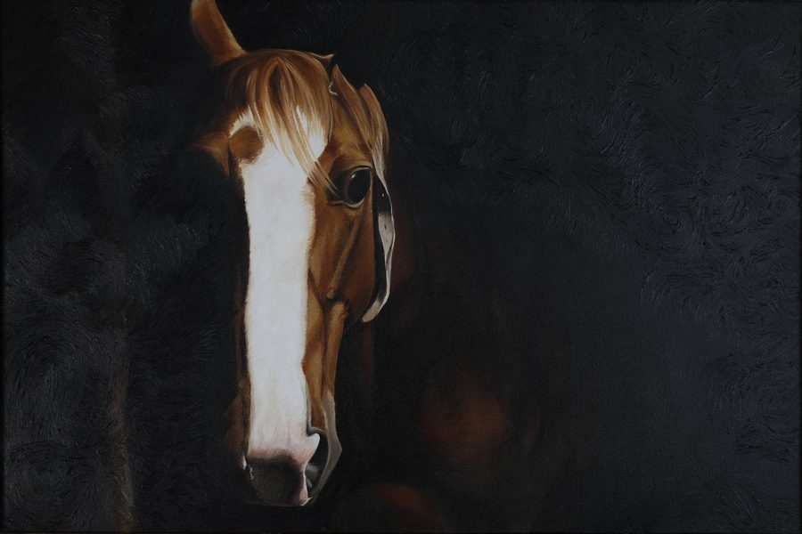

Old Barn
Oil on canvas, 2024 · 16 × 20 in
$875
Framed by Scott in oak from his own land: stained dark grey, painted white and antiqued (18 × 22 in, 2.25 in deep).
Ask about this paintingCentral Arkansas · Oil on canvas
Scott Michael Beckman paints flowers, animals, landscapes and people in oil, building every canvas layer by layer until it feels alive. Some even carry a hidden message.

Selected work




A hidden message
Scott gave Yellow Flowers to his wife Jana on their wedding day, January 19, 2002. Hidden in the texture of the petals and background is a message only they knew was there. More than twenty years later, it's still the piece she loves showing people most.
Drag the slider across the painting to reveal it.

Available originals
Scott mills the oak for his frames from trees on his own land, so the frame is as one-of-a-kind as the painting.
Oil on canvas, 2024 · 16 × 20 in
$875
Framed by Scott in oak from his own land: stained dark grey, painted white and antiqued (18 × 22 in, 2.25 in deep).
Ask about this paintingOil on panel, 2024 · 18 × 24 in
$1,150
Framed by Scott in oak from his own land, stained grey for a deep brown finish (20 × 24 in, 2.25 in deep).
Ask about this paintingAbout the artist
“Art is my lifelong pursuit. Each new work is an opportunity to grow and challenge myself. I strive to make every painting the best I’ve ever done.”
Born in Cincinnati and now living in Central Arkansas, Scott is a U.S. military veteran and registered nurse who worked in Texas ICUs during the Covid-19 pandemic. Those years shape how he paints: patiently, and with an eye for the small moments that matter.